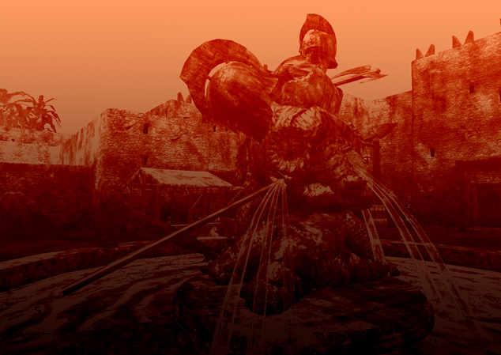
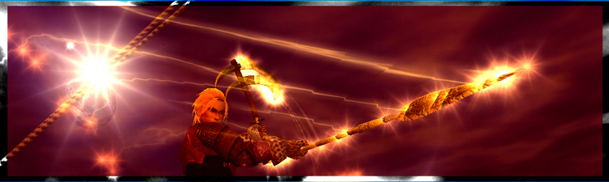

Raid Rules and Code of Conduct

We start at 6:50pm Pacific. This will most likely never change due to the fact that a majority of the force is PST, MST, or just plain insomniacs. Be at the raid meeting place (IN the guild hall) and ready to go beforehand.
"First call" is at 11pst. "Last call" is 12pst. We rarely keep you past 11, but be aware that you may be asked to stay a bit later.
Raid nights are Tuesday, Thursday, Friday. We may schedule "off night" raids for quest updates or fun runs. Please check the Raid Schedule thread in the Word from the Leaders forum (viewable after you've joined the guild).
Minimum Adventure Level to Apply: 80
Minimum AA: 120
Minimum Spell Level: Spells and Combat Arts must be Adept III or at least ordered and on the way. Get your raid toon mastered ASAP. You will be asked to post what you have upgraded after initiation.
Needed classes: See the Raid Application Section of the forum.
A few things to know:
- It is assumed you will get to max level ASAP and cap your AA as soon as possible.
- No-shows may result in a DKP dock & if repeated, removal of raiding privileges at Leadership's discretion. PM the raid leader, an officer or leader, or post to the MIA thread on the forums if you will miss raids or be out of game. We make allowances for certain situations and emergencies, but "my computer exploded" only works so many times. Please remember that no-shows are disrespectful to your guildmates who are putting in personal time, effort, debt and repairs to better ourselves and the guild. The raids will be held whether or not you show up or not, but it makes it that much more difficult for the guild to progress, and the Raid Leader to set a destination if the raid is waiting on the dock at 7, one group short. You must maintain a 30% raid attendance to maintain the Legion rank.
- You are expected to follow the Holy Might Code of Conduct and represent the guild with respect and dignity. This includes ooc, says, shouts, server channels, and posts on EQ related forums. We all have moments we get carried away - keep them at a minimum. Keep in mind that not just your guildmates, but competing guilds as well get this courtesy. Remember that as a Legion member you are a role model to other members in your actions.
- We're here to enjoy the game! If you find yourself getting frustrated with raiding or have any beef about the guild, seek an officer and set up a time to try to talk it out. If you need a time-out, please let officers/leaders know ahead of time so we're not left wondering where you went! We would much rather see you have to take a week off than burn out!
- Upgrading spells/skills is not optional! Understanding that many are on a budget, you might want to seek out some advice from those who have upgraded cheaply and efficiently. (any of the officers/leaders can help)
- You are expected to understand the Raid Rules and Loot Rules/DKP. If you have questions, please ask a guild officer or leader. Attending a raid is signing off as understanding.

Raid Rules
Following these simple rules of conduct allows the Legion to work smoothly and efficiently. Failure to follow these rules is not only disrespectful to the Raid Leaders, but the entire Legion. Please keep in mind at all times we are a team, and must work together constructively in order to succeed.
1. Above all, listen to the Raid Leader.
Respect the raid leader at all times. What they say, goes. Without them, we would not be where we are now.
Current raid leader:
Puppydog
a. During instructions, please keep chat free of clutter, stay still and pay attention.
A few minutes of your focused attention means less wipes and downtime for the entire raid. Jumping around and goofing off is distracting and disruptive. Witty injections & comebacks to instructions are disruptive as well. There's often a lot of detail in a strat to communicate to the raid. Having to repeat it means more downtime. Save the silliness for fun raids, AFK breaks and the easier trash mobs.
b. Do not argue or debate the Raid Leader's directions (in tells, in /r, in vent, in group), strategy, rules, where we’re going, who we’re going with, etc.
If you disagree with what we’re doing or what you’ve been asked to do, save the thought and bring it up in the forums/email/PM later, not during raids. It is one thing to make a constructive suggestion, it’s another thing to complain and/or harass a raid leader during a raid because they’re not doing it the way you think they should. Further, not doing ask you're asked may result in the entire raid sitting and waiting on you. Angry or abusive speech or behavior towards any raid leader will not be tolerated and will be grounds for a kick from the raid, probation or removal from the Legion.
c. Do not send the Raid Leader tells.
As a general rule, the Raid Leader is swamped. At any given time, they may be juggling officer chat, 2-3 people in tells, and raid chat/instructions, along with Ventrilo. They may also be looking up their notes, sorting out an issue, checking to make sure everyone is there, has potions, is ready, etc. etc. etc. Direct questions, comments, concerns to other officers and leaders in the raid UNLESS that officer/leader is MT, OT or MA. Failure to do so may turn you from "valued raider" to "pain in the butt."
2. Be on time.
This means: if it is posted in the MotD that we’re meeting on TS docks at 6:50 pst, be there and ready to go by 6:50pst. Have your armor repaired, be on Ventrilo if you have it, have your system rebooted if necessary for lag, have food/totems/drink/potions if necessary. If you know where we’re going and that a specific gear is required, have it on you. Last minute runs to the mender, the bank, etc. just hold us up longer.
I.E. If a raid is 7pm pst, get moving at 6:30 if you have things to get done beforehand.
Please keep in mind that in many cases, we may spend a good amount of time in a zone or on a mob. The faster we get going, the more we can accomplish within raiding hours, not to mention, the higher energy levels will be. Many of your teammates have jobs, children and other early morning activities…the more we are efficient here, the easier it is on all of us.
3. Keep Ventrilo and Raid Chat quiet during instructions, new zones/encounters, named encounters or particularly difficult fights.
If things start getting hairy and people start dying, vent should be quiet so the Raid Leader can give instructions.
If you want to joke in /guild chat or tells or group, fine - though make sure you are really paying attention to what’s going on so we can get on with what we’re there to do.
4. Keep AFKs to a minimum and always make sure a raid leader and/or group leader is aware you are AFK. Use your /afk tag.
Always set your AFK tag - it takes half a second to type it. If you're caught Ninja AFKing, particularily during a named fight, expect to be kicked from the raid & possible loss of DKP for the raid. Habitual Ninja AFK's may result in demotion from the Legion.
We try to work in breaks from time to time to allow people to grab a drink, take a bio, take a break or get mended, etc. If you can’t wait for one of these breaks, please try to bring it up in advance so we can decide to all break, or get you in a safe spot.
We understand that emergencies happen and you may have to take off - let a leader know what’s happening and go.
5. Two-boxed alts should be parked or (preferably) logged off prior to raids unless they are in the raid with the Raid Leader's permission. Boxing someone else's toon through a raid is not allowed unless specifically approved by the Raid Leader.
6. Do NOT zone in to any raid zone.
Keep your mouse off clickies and be wary of the F key ("activate"). This should go without saying, but it still happens & zoning in to a zone that does not allow late entry, or is difficult to get people to, means a lockout timer burned for the rest of us.
The raid leader or a designee will zone us in.
If you think you might doubleclick on a door by accident, stay away from it!
7. Know who your group leader is…particularly if it’s you.
Too much time can be wasted standing around waiting for a group leader who doesn’t know they ARE the group leader, to invite someone. And, group leaders, be sure to set a new group leader and let them know if you must go AFK or disband.
8. Keep your assist on the MA at all times unless specifically instructed. Healers know who you should be healing.
Assisting is REQUIRED, not "optional" unless you are a healer or your role (Mezzer/OT/MT) requires being on a different target. Attacking something that the MA is not on can lead to your death or a raid wipe. Healers should be focused on the MT, only offhealing their group unless instructed. Sometimes, it’s more important to keep the MT up and let someone die rather than risk a raid wipe. If someone frequently pulls agro - let them die. Why enable a bad habit?
9. Be aware of revive instructions.
DO NOT START REVIVING until called.
The Raid Leader will tell you when it is ok to revive. Some zones are buggy and will cause mobs to repeatedly agro the revived parties if they go too soon, or others in the raid are still alive. Other zones bug out when too many people revive at the same time, causing them to lock up. Please wait for revive instructions.
The Raid Leader may instruct you to not take a rez - listen for it, there's a good reason.
Necros, Priests, Pallies and Dirges should know the rezzing order, if applicable.
Do not revive mid-fight.
Do not rez a wiped raid until you are given the OK from the Raid Leader.
10. No mounts. No fun pets. No fun spells with glowy effects. Use /pet hide to hide diety pets.
Pets, mounts, glowy fun spells = lag. Only mounts that give stat boosts are allowed, and may be asked to be dismissed if the zone is laggy.
11. Do not micromanage your teammates.
If you’re not a raid leader, or a guild leader/officer who’s been asked to give instructions, don’t do it.
You can ask politely, if something is needed from a teammember (heart, shard, hate xfer). Do not pester for the "cool" buffs: Agitate, Vim, Coercer DPS, Illusory Arm... etc. etc.
It is no one else’s place but the raid (or a guild) leader’s to call someone out or give instructions. Your job is not to police each other but work together, keep that in mind at all times.
12. Respect your teammates.
Yelling, cursing, or treating someone disrespectfully for making a mistake will be dealt with by leaders and officers present.
13. If you are on “standby” for a raid, stay in a central location.
Upon being called up, having to wait 15 minutes for you to make it from Splitpaw to Feerrott slows the raid tremendously. Going to solo off in Bonemire when the raid is in Freethinkers is not the best idea.
Best option is to park the raiding toon and go play an alt you can be contacted on.
14. If you are getting tired, and planning on leaving the raid, let the raid leader know in advance.
Please let us know ahead of time so we can get a replacement if possible. Emergency situations happen, we know that, but planned departures should be handled in this manner.
15. CONTROL YOUR AGGRO.
It happens to all of us, but doesn't mean it's "OK." Most mobs have frontal attacks: barrage, riposte, etc. that will blow up everyone standing in front of them. Many scout classes have back attacks that cannot be used when the mob is suddenly facing them.
If you pull agro, you need to immediately turn the mob away from the raid, go to the MT, shut off autoattack/stop all attacks (and expect to die).
Everyone should back off and let the MT get sufficient hate back. Continually pulling agro will be dealt with on an individual basis but may leave you left out of critically hard fights.
16. Unless a zone is designated by the Raid Leader as a "free for all," do not lead or attend pick-up raids in any current tier raid zone. This also applies to alts if your main is a raider. If you are a casual member & not raiding with us, this rule does not apply.
You should never be locked out of a current tier raid zone unless the entire raid is locked out with you.
17. We figure out our own strats.
Feel free to gather information from your own experience. Dig through your parser, make observations and post them to the Legion forums for discussion. Screenie any debuffs or AE's you can get and post them as well. We welcome your input and participation in figuring out the puzzles and strats, but we do not go to other guilds/sites to copy strats. If you're coming in from a guild that has completed the content we're working on, please understand what our goals are and respect the puzzle solving process.
Officers and Leaders decide as a group how much research we'll do on a particular mob or zone if we get stuck. Further clarification can be found in the Legion section of the forums (viewable after initiation).
18. Remember we’re here to have fun!
Observing these rules of conduct creates a better overall atmosphere for us as a group.
Failure to observe the rules will eventually result in your removal from Legion.